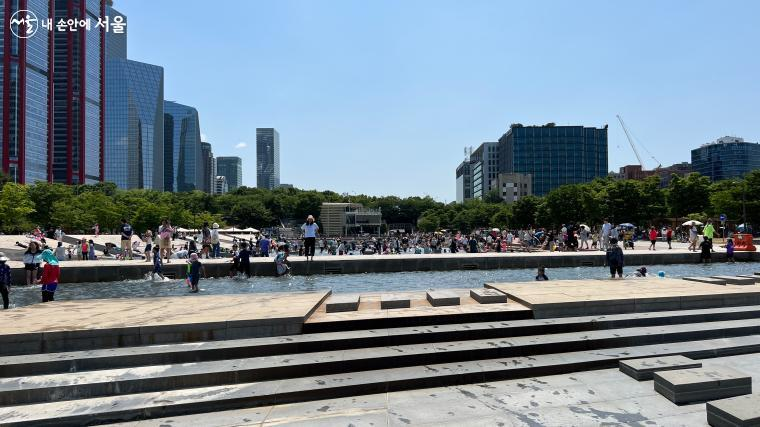

도심 속 자연

도심과 자연이 어우러진 명소들을 방문해보세요
서울의 중심 '남산'
맑은 공기 속에서 편안한 시간을 보내보세요
< 패밀리코스 >
Famliy Course
< 커플 코스 >
Romantic Course
< 힐링 코스 >
Healing Course
< 스포츠레저 코스 >
Sports/Leisure Course
['남산'에 대해 더 알고 싶다면 ☞]맛집 추천
반포 한강공원
자연·문화·힐링이 어우러지는 한강 명소

< 한 눈에 보는 반포 한강공원 >
< 차 없는 잠수교 뚜벅뚜벅 축제 >
놀며, 쉬며, 걸으며 멋진 한강 노을까지 감상하세요
< 서래섬 >
해질녘의 노을과 야경이 아름다운 바둑돌 모양의 인공섬
< 세빛섬 >
'한강과 서울을 빛내라' 아름다운 조명이 반짝이는 3개의 섬
< 달빛무지개분수 >
무지개빛 조명과 음악에 맞추어 춤추는 아름다운 분수
['반포 한강공원'에 대해 더 알고 싶다면 ☞]맛집 추천
여의도 한강공원
높은 빌딩들이 가득한 여의도 도심 속 오아시스
< 한 눈에 보는 여의도 한강공원 >
< 잠 못 이루는 여름밤, 한강에서 즐기는 피크닉 >
돗자리 하나 펴고 앉아 즐기는 치맥으로 힐링하세요

< 강캉스의 중심 '물빛광장' >
높은 건물과 초록색 자연, 한강이 어우러진 힐링 명소
< 서울밤도깨비야시장 >
달빛을 배경으로 펼쳐지는 한 밤의 예술시장
['여의도 한강공원'에 대해 더 알고 싶다면 ☞]맛집 추천

매헌시민의 숲
우리나라 최초의 숲, 매헌시민의 숲
< 키 큰 나무들이 울창한 산책로를 거닐어봅시다 >
< 메타세쿼이어 숲 >
도심에서 보기 힘든 울창한 녹색 휴식 공간
< 매헌윤봉길의사기념관 >